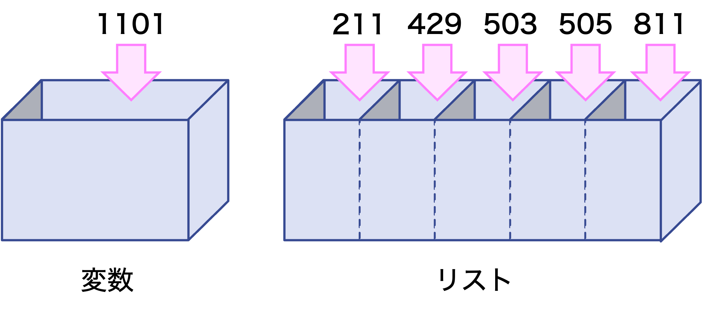

(1) リストの基本
リストとは
リストとは、複数の値をひとまとめにできる変数型のひとつです。

int型やbool型などの通常の変数には1つの値しか入れられませんが、リストには複数の値をひとまとめにして入れられます。通常の変数は普通の箱で、リスト型の変数は箱の中に仕切りがあるようなイメージです。
リストの定義
リストでは、それぞれの値のことを要素といいます。カンマ(,)で区切った要素を角括弧[...]で括ると、リスト型の変数として定義できます。
リスト名 = [値1, 値2, 値3, … ]
リストを画面出力する
print(リスト名)でリストを出力することができます。
numbers = [24, 83, 64, 37, 19]
print(numbers)
[24, 83, 64, 37, 19]
リスト内の特定の要素を取得する
リストに格納された要素には、インデックスとよばれる番号が振られます。インデックスは0(ゼロ)からはじまります。また、末尾の要素のインデックス番号は(要素数−1)となります。リスト内の要素を取得する場合は、リスト名[インデックス]のように書きます。
numbers = [24, 83, 64, 37, 19]
print(numbers[2])
64
インデックス番号に-1を指定すると、末尾の要素を取得します。
numbers = [24, 83, 64, 37, 19]
print(numbers[-1]) # -1を指定すると、末尾の要素を取得
19
リスト内の要素を書き換える
リスト内の要素を書き換えるときは、次のようにします。
numbers = [24, 83, 64, 37, 19]
numbers[2] = 99 # 2番目（3個目）の要素を99に変更
print(numbers)
[24, 83, 99, 37, 19]
(2) リストの操作
for文とリストを組み合わせることで、リスト内の要素についてさまざまな処理をすることができます。
リストの要素数を求める
リストの要素数を求めるときは、len関数を使います。
numbers = [24, 83, 64, 37, 19]
n = len(numbers)
print(n)
5
リストに値を追加する
リストの末尾に新しい要素を追加するときは、リスト名.append(値)のように書きます（appendはメソッドというもので、また別の機会に扱います）。
numbers = [24, 83, 64, 37, 19]
print("元のリスト：", numbers)
numbers.append(57)
print("追加後のリスト：", numbers)
元のリスト： [24, 83, 64, 37, 19]
追加後のリスト： [24, 83, 64, 37, 19, 57]
リスト内の値の数を数える
リスト内の特定の値の数を数えるときは、リスト名.count(値)のように書きます（countもメソッドというもので、また別の機会に扱います）。
numbers = [11, 22, 33, 22, 44, 11, 33, 22, 44]
print(numbers.count(22))
3
リストの要素の順番をシャッフルする†
randomモジュールのshuffle関数を使うとリストの要素の順番をシャッフルすることができます。
import random
numbers = [37, 42, 45, 55, 56, 58, 59, 89, 95]
random.shuffle(numbers) # numbersの要素をシャッフル
print(numbers)
[45, 58, 37, 55, 95, 56, 59, 89, 42] # 結果は毎回変わります
(3) リストとfor文
for文を用いることでリスト内の要素についてさまざまな処理をすることができます。
リスト内の要素を順番に取得する
リスト内の要素を順番に取得するときには、次のように書きます。繰り返しのたびにリストの要素が変数に順番に代入されます。
for 変数 in リスト:
# 繰り返し処理
次の例では、リスト変数fruitsの中の要素を繰り返しのたびに変数fruitに代入し、画面出力します。リストの変数名は複数形、その要素の変数名は単数形で書く習慣があります。
fruits = ["apple", "banana", "cherry", "drian"]
for fruit in fruits:
print(fruit)
apple
banana
cherry
drian
インデックス番号を用いて順番に取得する
要素のインデックス番号を使ってfor文を書くこともできます。要素だけ取り出せばいい場合には上記のように書く方が簡単ですが、インデックス番号を他の処理にも使う場合には、このような書き方の方がよいでしょう。
for インデックス番号 in range(len(リスト)):
# 繰り返し処理
range関数の引数にlen(リスト)（リストの要素数）を指定することで、インデックス番号が0〜(要素数−1)まで繰り返すという意味になります。先頭の要素のインデックス番号は0(ゼロ)、末尾の要素のインデックス番号は(要素数−1)となります。リストの要素数が決まっているならrange関数の引数に数値を直接入れてもいいですが、リストは要素を追加したり削除したりする使い方が多いので、len(リスト)としたほうがいい場面が多いです。
次の例では、インデックス番号を0から(要素数−1)までfor...in range(...)で繰り返して、要素をインデックス番号で取得し、画面出力します。
fruits = ["apple", "banana", "cherry", "drian"]
for i in range(len(fruits)):
print(i, fruits[i])
0 apple
1 banana
2 cherry
3 drian
リスト内の数値の計算
次の例では、numbersの各要素を２倍してdoubled_numbersに格納します。for文で要素を順番にひとつずつ取得して２倍し、doubled_numbersに追加します。
numbers = [24, 83, 64, 37, 19]
doubled_numbers = [] # 空（カラ）のリストを用意
for number in numbers:
doubled_numbers.append(number * 2)
print(doubled_numbers)
[48, 166, 128, 74, 38]
リスト内の数値の合計を求める
次の例では、numbers内の値の合計を求めます。
numbers = [58, 95, 89, 56, 45, 59, 55, 42, 37, 67]
total = 0
for number in numbers:
total = total + number
print(total)
603